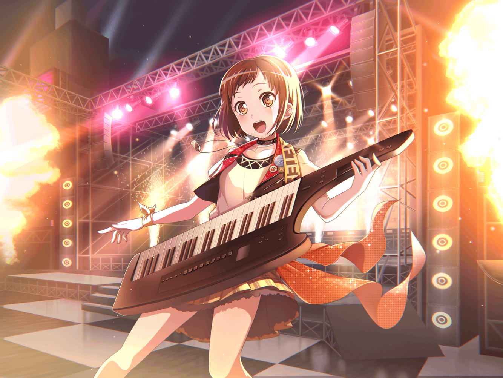

つぐみ
う～ん、今日はどこで練習しようかな……
つぐみ
昨日、確認した時、スタジオは埋まってるって言われたし、
どこか音を出しても大丈夫そうなところは……
つぐみ
……あっ、{{userName}}さん。
こんにちは。お出掛けですか？
つぐみ
これからスタジオに行くんですね。
お疲れさまです
つぐみ
え？ 私……ですか？
つぐみ
今日は全体練習がお休みなんですよ。
だから、自主練をしようと思って
つぐみ
えらいね、って……
つぐみ
そ、そんなことないです！
私はみんなと違って凡人だから、
みんなの倍以上練習しないといけなくて……
つぐみ
だから休みの時は、
なるべくキーボードに触るようにしているんですっ
つぐみ
……ふふ、{{userName}}さんは優しいですね。
こんなにも私達のことを気にかけてくれるなんて
つぐみ
そうですね。
たまに不安になることもあります
つぐみ
どこまで頑張ればいいんだろうって
つぐみ
でも、それを考えたらキリがないですから！
今はできることをしようって思うんですっ
つぐみ
例えば、ですか？
つぐみ
う、う～ん、そうですね……
つぐみ
蘭ちゃんとモカちゃんは息ピッタリだし、
ひまりちゃんと巴ちゃんもリズム隊として、
蘭ちゃんの歌声を支えています
つぐみ
私もそんなみんなに負けないように、
とにかくたくさん練習しなきゃ！ って思ってます
つぐみ
なんだかんだ言って、
私は頑張ることしかできませんから
つぐみ
それが私のいいところ、ですか？
つぐみ
そそそ、そんなことを言っていただけるなんて……！
い、いえ、謙遜しているわけじゃなくて、ですね……
つぐみ
私、あまり褒められることがないので、
そうやって言ってもらえるのが、なんだかくすぐったくて……
つぐみ
えへへ、ありがとうございます！
{{userName}}さんにそう言っていただけて、
すごくうれしいです！
つぐみ
……でも、頑張ろうって思うのは、
みんなに追いつきたいからだけじゃないんです
つぐみ
前にも話したことがあるかもしれませんけど……
みんなにバンドをやろうって言ったのは、私なんです
つぐみ
中学の頃、すれ違いがあって、
蘭ちゃんが授業に出なくなっちゃって……
つぐみ
それでみんなで一緒にいられるようにって、
バンドを始めたんです
つぐみ
勢いで『バンドをやろう！』って言っちゃったけど、
ひまりちゃんが乗ってくれて、
モカちゃんや巴ちゃんもいいねって言ってくれて
つぐみ
最後に蘭ちゃんがOKしてくれて、
私達、Afterglowが結成されたんです！
つぐみ
それから文化祭でデビューライブをして、
練習していくうちに
本格的にバンドをしようってなって……
つぐみ
気づいたら、
ライブハウスでライブをするようになってました
つぐみ
蘭ちゃんをきっかけに組んだバンドですけど、
Afterglowはいつの間にか私にとって、
大切な場所になっていたんですよ
つぐみ
……だから、そんな大切な場所を守るためにも、
たっくさん頑張らなきゃ！ って思ってるんです
つぐみ
それに、言いだしっぺは私ですから。
その辺の責任もちゃんと取らないと……ですしね！
つぐみ
え、へへ……
改めてこういう話をするのって、ちょっと恥ずかしいですね……
つぐみ
へ？
他にも言いだしっぺになったことはあるのか、ですか？
つぐみ
えっと、そうですね……
つぐみ
あっ、ガルジャムってイベントに出ようって言ったのも、
私なんですよ
つぐみ
スタジオで練習をしていたら、
ひまりちゃんが、
『ガルジャム出演者募集』のチラシをもらってきたんです
つぐみ
ガルジャムはメジャーなイベントだから、
みんな、どうしようかって迷ってた時に……
つぐみ
気づいたら『出よう！』って言っていたんで
つぐみ
あ、はは……バンドを組んだ時と変わらないですね。
つい勢いで言っちゃって……
つぐみ
みんな、ぽかーんってしていましたし、
モカちゃんなんて『つぐ、かっこいい～』ってからかうんですよ？
つぐみ
あ、あの時は恥ずかしかったなぁ……
つぐみ
それから色々あったけど……
みんなで頑張って、ライブは無事に成功したんです！
つぐみ
ライブが終わったら、ひまりちゃんが泣いちゃって……
私も釣られて泣きそうになっちゃいました
つぐみ
どれも大切な思い出ですね！
つぐみ
……たまに、あの時のことを思い出すんです。
そのたびに、『出よう！』って言ってよかったなって
つぐみ
もし言わなかったら、今はありませんからね！
つぐみ
私はどんくさいところがあるし、
思うようにできなくて、俯きそうになることもあります
つぐみ
だけど、みんなといるだけで前向きになれる。
どこまでも頑張ろうって思えるんです
つぐみ
俯いてばかりいたら、
それこそみんなに追いていかれちゃいますから
つぐみ
いつかみんなに頼ってもらえるように、
とにかく、頑張ろうと思います！
つぐみ
……え？
そんな私達を、これからも見守っている、ですか？
つぐみ
あ、ありがとうございます！
{{userName}}さんが見守ってくれるなら、
安心して前を向いていられますね！
つぐみ
はっ！？ な、長々とすみません……
これからスタジオに行かれるんですよね？
つぐみ
私はどこか練習が出来そうなところを探さないと…
つぐみ
えっ、スタジオですか？
さっきキャンセルが出たから空いてるって……
つぐみ
は、はい、ぜひ使わせてください！
つぐみ
まさかスタジオが使えるなんて思ってませんでした。
これは気合いを入れて練習しないと、ですね！
つぐみ
……よ、よーし
つぐみ
えいえい、おー！
つぐみ
……え、えへへ、ひまりちゃんの真似をしてみました。
次のライブ、期待しててくださいね！